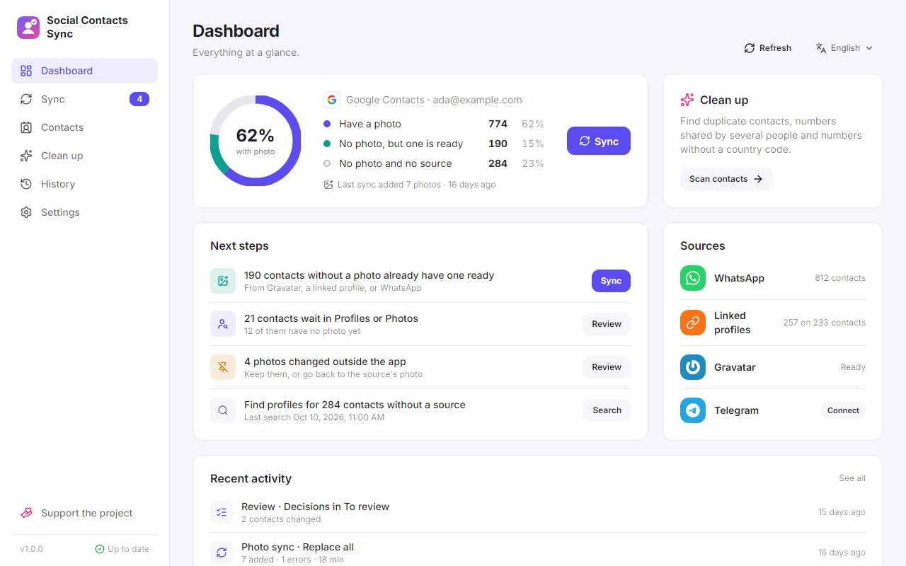
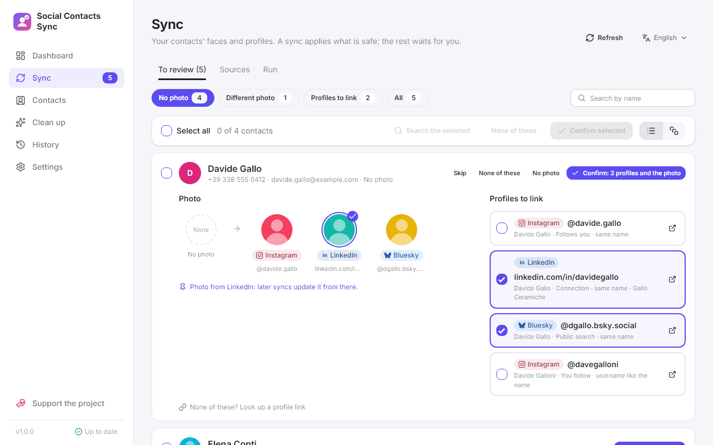
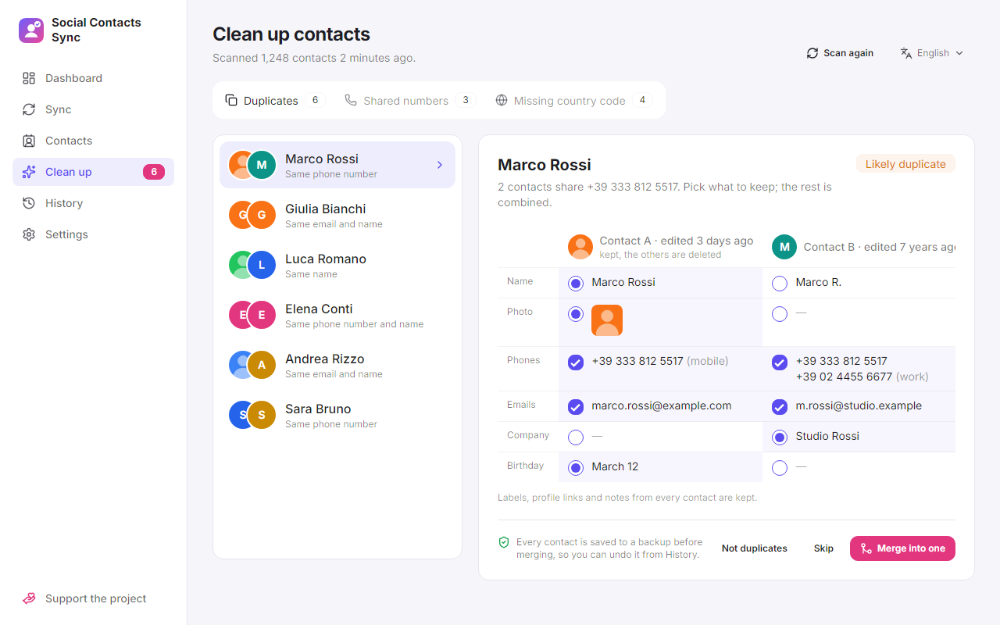

What it is
Social Contacts Sync is a free, open-source desktop app that fills Google Contacts with your contacts' profile photos from WhatsApp, Telegram, Gravatar and their social profiles, finds those profiles for you, and cleans up duplicates, shared numbers and missing country codes. For Windows, Linux and macOS.
At a glance
- Licence
- Apache 2.0 with the Commons Clause


